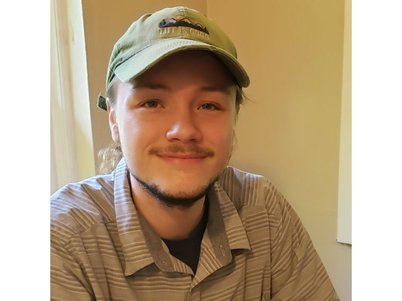
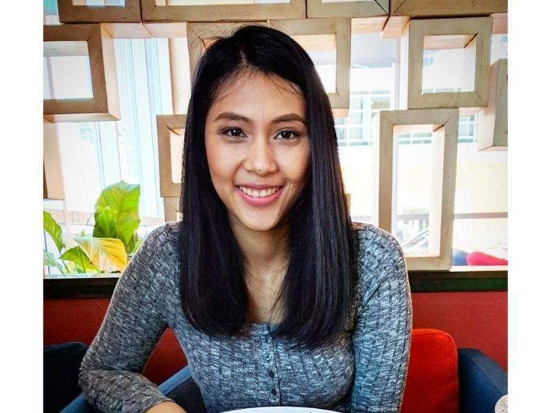

Home
About Us
WHO ARE WE
All
Data Science
Back-End
Front-End
UI
Team Lead
Reed James
Frontend for Correlates of war. Currently full stack web track (Web 20). You can find more of my work here.
Valerie Ogonor
Team Lead for Correlates of War. DS1/CS18. You can find more of my work here.
James Starks
Backend Engineer for Correlates of war. Probably a Skeksis. You can find more of my work here
Nico Montoya
Data Scientist for Correlates of War (DS3). You can find more of my work here
Will Cotton
Data Scientist for Correlates of War (DS3). You can find more of my work here
Joseph Wagner

Data Scientist for Correlates of War (DS3). You can find more of my work here
Suparada Saitalae

UI Developer for Correlates of War (WEB21). You can find more of my work here
Obaida Albaroudi
UI Developer for Correlates of War (WEB21). You can find more of my work here